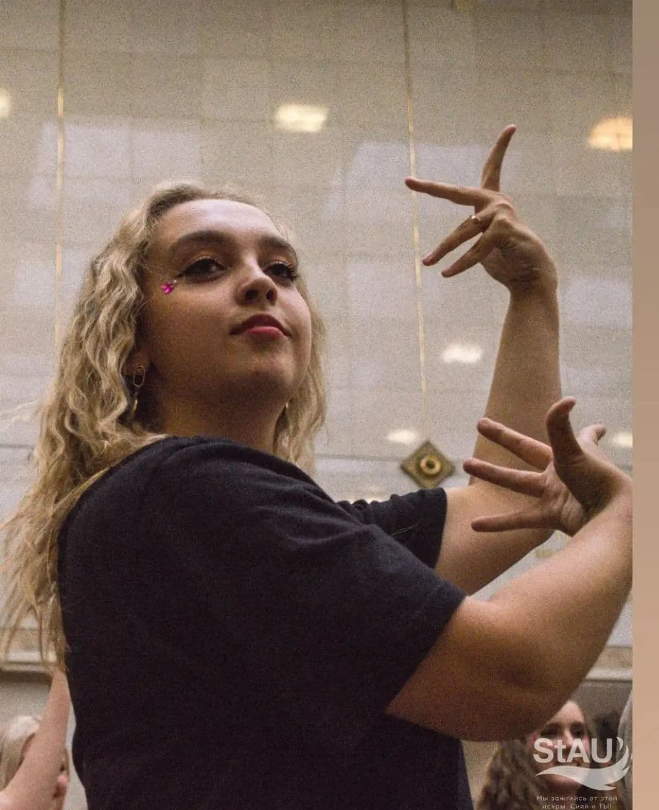
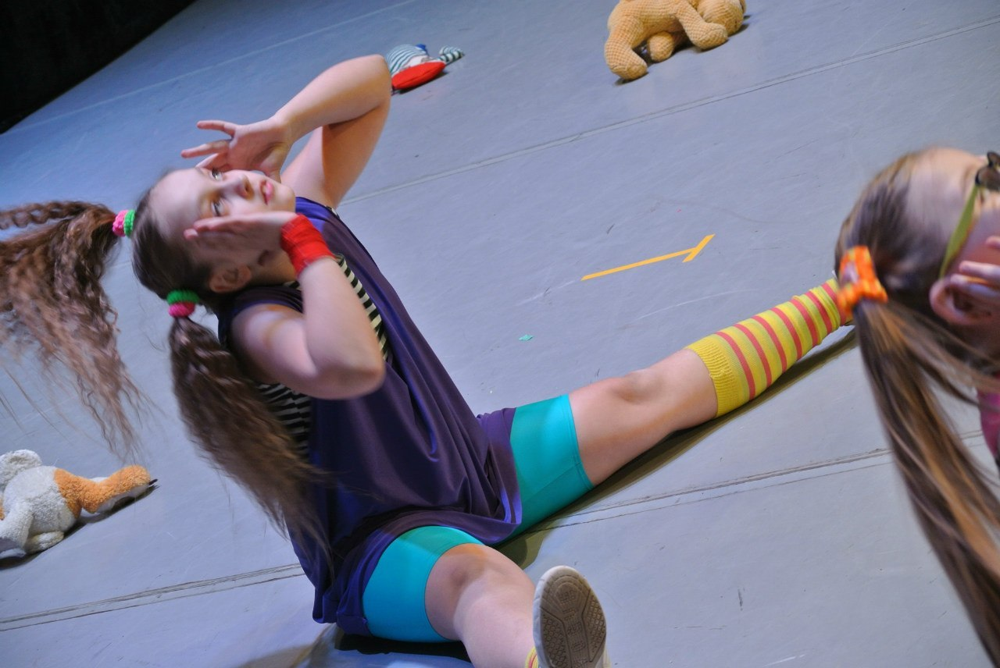
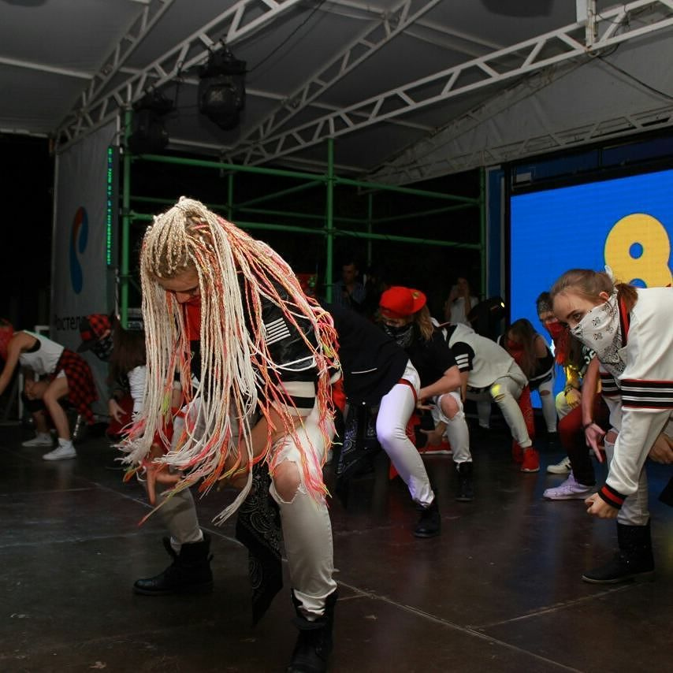
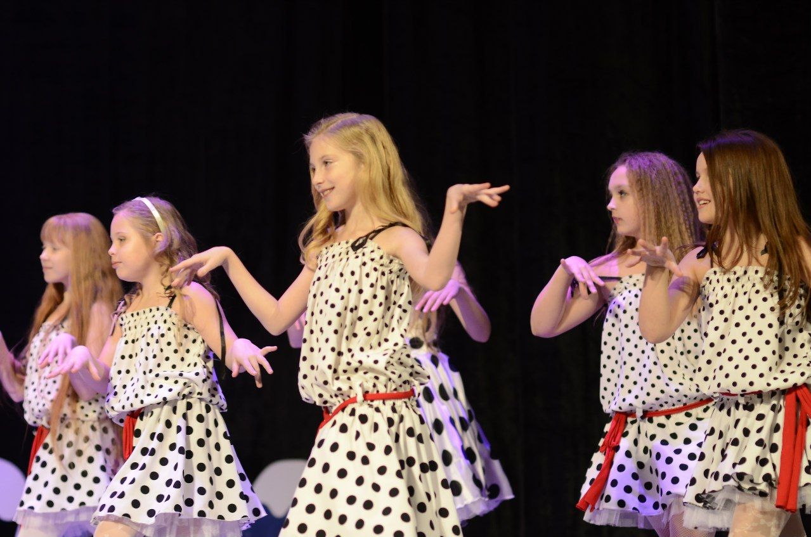
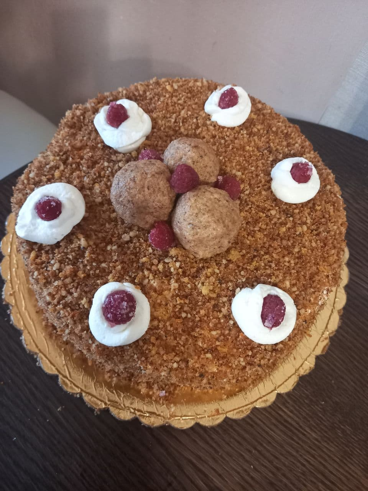
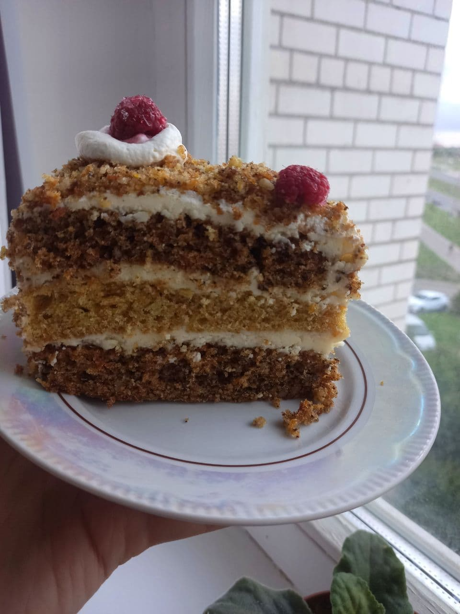

Жизнь без увлечений как пища без соли, как колодец без воды и как лето без солнца.
Мне сложно представить, что есть на свете такие люди, у которых совсем нет никаких увлечений, ведь без них жизнь пуста и не интересна.
Любимое увлечение может появиться в любом возрасте, но лучше всего получить с детства.
Мы все делаем какую-то работу в соответствии с нашими интересами, которые могут дать нам счастье и радость, которые называются хобби.
Некоторые люди имеют разные увлечения по интересам, симпатиям и антипатиям.

Есть много видов хобби, которые мы можем развивать, таких как танцы, пение, рисование, игра в помещении или на улице, наблюдение за птицами, сбор антиквариата, фотография, письмо, еда, чтение, садоводство, музыка, и т.д.
Почти любой профессиональный танцор скажет: «Мое хобби танцы».
И оно действительно так, ибо этот род занятий не только приносит мне удовольствие, но и другие блага.
В первую очередь — это спорт. Это возможность побывать с гастролями во многих странах мира.

Выходя на сцену на публичное выступление я чувствую на себе сотни устремленных взглядов.
Они то и будут судьями, критиками и приверженцами.
Это повод к совершенству, ликвидации всякой боязни, психологическому настрою и налаживанию контакта с аудиторией на расстоянии.
Но если есть небольшая нервная тряска перед каждым выходом на сцену, значит танцору не безразлично, как отреагирует публика.
Не ударить в грязь лицом — это еще один повод быть ответственным, любить свое занятие и оттачивать свое мастерство.



Мне очень нравится готовить.
Когда мама или бабушка готовят, я всегда помогаю и учусь у них.
Мое увлечение – это не только делать еду, но и украшать ее.
В детстве я всегда мечтала стать кондитером, потому что сладости мне нравится делать больше всего.
Десерты требуют особого искусства: их любителя надо уметь удивлять.
Пока я только учусь готовить, но у меня уже есть коронные блюда.
Например, я делаю очень вкусный морковный торт. Его рецепт я прочитала в интернете. (
Рецепт можно посмотреть тут! )
Теперь это любимое лакомство всей семьи!


| №п\п |
Любимый торт |
Любимый крем |
| 1 |
Морковный |
Крем Чиз |
| 2 |
Прага |
Заварной крем |
| 3 |
Шпинатный |
Масляный крем |
| 4 |
Красный бархат |
Белковый крем |

Вся жизнь человека состоит из музыки.
Если мое хобби музыка, и некоторым это понятие чуждо, значит я с ними говорю на разных языках, так скажет любой из нас.
Музыку нужно воспринимать не только на слух, ее нужно чувствовать внутри себя, переживать.